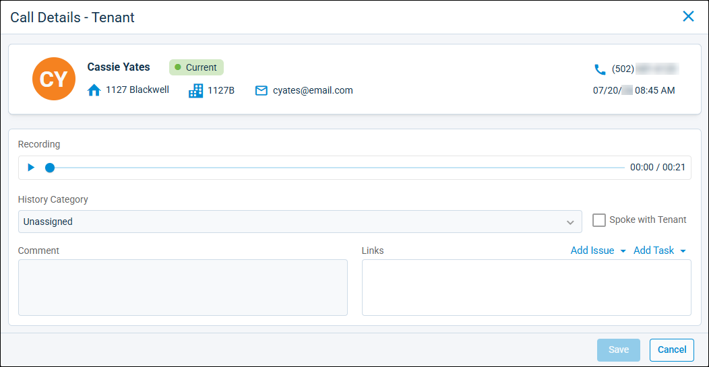

Source: https://rmxhelp.rentmanager.com/Topics/Express/CSH/rmVoIP-Call-Details.htm
rmVoIP Call Details (Page)
When you receive a phone call through rmVoIP, Rent Manager attempts to link the call to an account in your database with that phone number to provide you with information about the caller immediately. If a call cannot be linked, you can create an account in Rent Manager to link the call with or link it to an existing account and its associated entity (i.e., Tenant, Prospect, Owner, etc.) on the call's details page. Additionally, on this page, you can access the call's audio recording, link an issue or task, indicate if the caller was spoken to, or edit the call's information.
More Information
This feature is licensed and must be purchased separately. For more information, contact your sales representative at sales@rentmanager.com.
To view the details page of a call you received through rmVoIP, go to  arrow_forward Communication arrow_forward Texting/Phone arrow_forward rmVoIP Incoming Call History and select a call from the list.
arrow_forward Communication arrow_forward Texting/Phone arrow_forward rmVoIP Incoming Call History and select a call from the list.

The top tile displays phone number associated with the call and the date and time on which it was received, as well as the account linked to the phone number.
More Information
If the call is not linked to an account, select Add New Account to create a new account to associate with the call, or Link to Existing Account to link the call with an existing account in Rent Manager. For more information, refer to Link an Unlinked Call or Voicemail to an Account.
The following fields display on the pop-up:
| Field | Description |
|---|---|
|
Comment |
An optional note providing additional information regarding the call. |
|
History Category |
The history category that best identifies what the call was about. By default, Unassigned populated this field. |
|
Links |
If applicable, the issue(s) and/or task(s) created from this call to address an issue or follow-up with an action. For more information, refer to Link Tasks and Issues to a Call or Voicemail. |
|
Recording |
The full audio recording of the call. Click to play the audio. More Information If the Orion Call Summary feature—powered by Orion AI—is purchased and enabled in your database, the Summarize option displays. By selecting this option, Orion AI briefly analyzes the call recording and generates a text summary of the call. For more information, refer to Call Summaries Powered by Orion AI. |
|
Spoke with X |
Check to indicate that a call took place with the intended recipient rather than leaving a message. For unlinked calls, this field displays as Spoke with Caller. For linked calls, the field reflects the linked entity. For example, owner calls display this field as Spoke with Owner. |